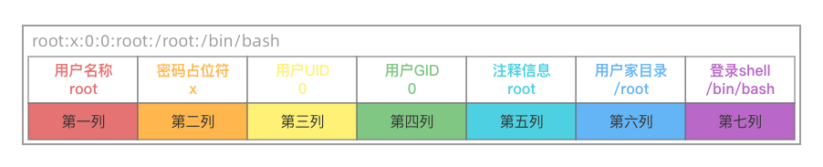
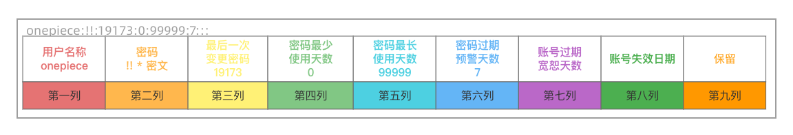
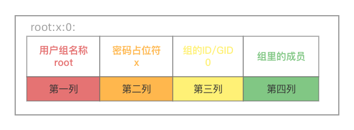

权限管理之用户与组
介绍¶
推导过程¶
OS - 进程 - 进程使用文件 - 进程权限 - 用户
OS是协调管理硬件资源与上层应用程序的软件. 通俗点,OS拿着硬件资源给上层的应用程序用
每运行一个应用程序就会产生一个进程. So,再准确点,操作系统是在协调管理一堆进程来使用硬件.
OS手握一堆进程, 应用程序的运行(进程)过程中涉及到对数据的操作..
而数据是硬盘中存放着的一个个文件. 不同的进程可能会对同一个文件有不同的读写权限.
那如何区分不同进程的权限？别问,问就是对文件的权限! Linux中一切皆文件 _ !
试想一下,如果没有用户这个概念.每个文件的元数据里都要记录每个进程对其拥有的权限..
若运行了100个进程,每个文件都要记录100个进程权限..
It's very fool ! 这会导致文件的元数据非常大!
这一设想还未考虑不同人使用进程时,进程对文件的权限还会产生变化这一变数..
换个思路,将 Linux所有的文件 都设置好其关联的用户、用户组、其他人以及对应的权限.
再以用户的身份去起进程, 该用户运行的进程与用户拥有的权限一致.. 就得到了完美解决.
用户¶
Q: 用户是什么？
A: 用户是操作系统提供的一种安全机制,用户与组都是权限的化身!
Q: 为何要有用户？
A: 划分权限,增强安全性.
进程关联用户,用户拥有权限,权限作用于文件上.** TnT 搁这绕口令呐..
用户组¶
组也就是类,一类人拥有相同的权限..
主组: 用户本身所在的部门
附加组: 为用户添加的部门
▲ 用户与组的关系
一对一: 一个用户可以属于一个组,用户默认在自己的主组下
一对多: 一个用户可以属于多个组,用户只有一个主组,但可以为用户添加多个附加组
多对多: 多个用户可以属于多个组. 即一个用户属于多个组,一个组里可以有多个用户
▲ 对于linux系统来说,它可不认识啥用户名,组名,用户和组的角色是通过 UID 和 GID 识别的!
"""
`id`: 查看当前登录用户的用户信息
`id dc`: 查看指定用户dc的用户信息
`whoami`: 查看当前登录的用户
`who`: 用于显示系统中有哪些使用者正在上面
"""
[root@localhost ~]# id
uid=0(root) gid=0(root) 组=0(root)
[root@localhost ~]# id dc
uid=1001(dc) gid=1001(dc) 组=1001(dc)
[root@localhost ~]# whoami
root
[root@localhost ~]# who
root :0 2022-07-04 22:55 (:0)
root pts/0 2022-07-20 22:08 (172.16.150.1)
UID(User Identify):用户ID.
每创建一个用户,操作系统就会为其分配一个UID.
uid相当于一个人的身份证,用户名就相当于这个人的名字.
GID(Group Identify):组ID.
如果把一个操作系统当成一家公司,uid相当于某人的员工号,gid相当于他的部门编号.
组=0(root):指的是附加组.没有的话,默认是主组.
[了解]
centos7系统之前约定
uid:0 由超级用户或具备超级用户权限的用户创建的用户,不受权限的压制(￣▽￣)
uid:1~499 系统虚拟用户,不能登录,以某种身份起进程,让进程拥有权限.
uid:500-65535 普通用户
centos7系统约定：
uid:0 超级管理员,最高权限,有着极强的破坏能力,不受权限的压制(￣▽￣)
uid:1~200 系统用户,用来运行系统自带的进程,默认已创建
uid:201~999 系统用户,用来运行安装的程序,所以此类用户无需登录系统
uid:1000+ 普通用户,正常可以登录系统的用户,权限比较小,能执行的任务有限
Ps: root超级用户是不受权限压制的!
即便某个文件对它来说没有读权限,它也可以读.
哪怕有些文件能阻止它对其的修改,但root账户是可以修改权限的!!!
用户角色划分¶
细分属主 u 、属组 g、其它人 o 对文件的权限: 将用户划分为三类,使不同的角色对此文件都拥有相对应的权限.
[root@localhost ~]# ll /etc/passwd
-rw-r--r-- 1 root root 2351 7月 18 18:12 /etc/passwd
"""
-rwxrw-r-- 1 egon IT 2351 7月 18 18:12 /etc/passwd
linux系统把文件权限分为了三类:属主、属组、其它人
一个用户对文件的权限扫描的优先级:
○ 先看该用户是否是文件的属主
○ 在第一步失败的情况下,再看该用户是否是文件的属组
○ 在第二步失败的情况下,该用户属于其他人权限
"""
1> 若当前登录用户时egon,egon所属的部门是IT部门.
/etc/passwd的拥有者是egon,那么egon对其拥有的权限是rwx;哪怕egon属于IT部门,文件拥有者的优先级会高一些.
2> 若当前登录用户不是文件的拥有者,是lili,lili是属于IT部门的,那么lili对/etc/passwd的权限为rw-
3> 若当前登录用户既不是文件的主人,也不是IT部门里的,那么对其拥有的权限为r--
用户与组相关文件¶
| 文件 | 相关 |
|---|---|
| /etc/passwd | 用户 |
| /etc/shadow | 密码 |
| /etc/group | 组 |
| /etc/gshadow | 组密码 |
| /etc/skel/ | 家目录的模版 |
| /home/用户名 | 用户的家目录 |
| /var/spool/mail | 用户的邮箱文件 |
/etc/passwd¶

注意: 在实验环境下,将第二列密码占位符设置为空..就不需要密码登录了... 在真实环境下,这是大忌!!!!!!
root:x:0:0:root:/root:/bin/bash 以:为分隔符,分为了7列
1> 第一列: 用户名/登录名
2> 第二列: 密码占位符, 这里是一个x, 其实密码已被映射到/etc/shadow文件中;
为什么要这样做？Because杜绝将鸡蛋放在同一个篮子里.
那将密码加个密不就行了嘛？密码在另一个篮子/etc/shadow里确实加密啦.并且除了root,谁也没有权限.
放在两个篮子里,黑客要破解两个文件的权限,并且要对密码进行解密..
[root@localhost ~]# ll /etc/passwd
-rw-r--r-- 1 root root 2351 7月 18 18:12 /etc/passwd
[root@localhost ~]# ll /etc/shadow
---------- 1 root root 1388 7月 4 16:53 /etc/shadow
Ps:浏览器客户端默认会将表单里的密码进行加密后再post给服务端.防止中间人攻击.
(即若C->S传输数据过程中包被截获拿走后,中间人不能直接用)
实则,高级黑客可以自己写浏览器客户端,不然其加密,直接密码明文传输..
3> 第三列: UID
4> 第四列: GID
5> 第五列: 用户的描述信息,可选
6> 第六列: 用户的家目录所在位置(即个人/私人文件夹)
7> 第七列: 用户所用SHELL的类型,代表用户登录之后运行的第一个程序
/bin/bash 登录后出现交互式的界面,可以直接输入命令
/sbin/nologin 不允许登录.属于系统用户.
Ps: 除了/bin/bash标识的用户外,其它都是系统用户..
/etc/shadow¶
nobody:*:18353:0:99999:7:::
onepiece:!!:19173:0:99999:7:::
root:$6$l2UODot/le0BbEsQ9x7T0/ZUjclL9Zo7bjZ1::0:99999:7:::

以:为分隔符,分为了9列
1> 第一列: 用户名/登录名,这个字段是非空的
文件/etc/shadow与/etc/passwd的用户名是相同的,这样就将两文件的用户记录联系到了一起
2> 第二列: 密码,这个字段是非空的
* 代表是系统用户/不能登录的用户
!! 代表还未设置密码,账号没有密码压根是登录不上的
一堆字符串 加密密码
3> 第三列: 最近修改密码的时间
这个时间是从UNIX元年1970年01月01日算起到最近一次修改口令/密码的时间间隔(天数)
您可以通过passwd命令来修改用户的密码,然后查看/etc/shadow中此字段的变化
4> 第四列: 用户密码最少多少天才能修改,如果设置为0,则禁用此功能.
默认值是通过设置/etc/login.defs文件中的PASS_MIN_DAYS字段进行定义.
5> 第五列: 最多多少天就必须改密码了.
默认值是通过设置/etc/login.defs文件中的PASS_MAX_DAYS字段进行定义.
6> 第六列: 提前多少天告知用户密码将过期.
默认值是通过设置/etc/login.defs文件中的PASS_WARN_AGE字段进行定义.
7> 第七列: 在账号失效日期到了后,还可以使用几天.
8> 第八列: 账号失效日期.若此字段的值为空,表明帐号永久可用;
9> 第九列: 保留字段,目前为空,以备将来Linux扩展之用
Ps: man shadow来查看帮助可会得到更为详尽的资料.
/etc/group¶
每创建一个用户都会创建一个该用户的主组,主组的名字与用户名相同!
(即useradd tom创建tom用户的同时创建了一个名为tom的组)

以:为分隔符,分为了4列
1> 第一列: 用户组的名称
2> 第二列: 用户组的密码占位符 /etc/group的影子文件是/etc/gshadow
3> 第三列: 用户组的ID/GID.
注意:员工编号001和其所在部门的001编号是两个意思.
4> 第四列: 组里有哪些成员.用逗号分隔.
若为空,代表与该用户组名称同名的用户的附加组与主组一样.
若不为空,会将该组添加到组成员的附加组里.
△ 为tom用户组添加组成员
修改/etc/group文件即可
[root@localhost ~]# tail -1 /etc/group
tom:x:1003:dc,egon
[root@localhost ~]# id dc
uid=1001(dc) gid=1001(dc) 组=1001(dc),1003(tom)
[root@localhost ~]# id egon
uid=1002(root) gid=1002(root) 组=1002(root),1003(tom)
/etc/gshadow¶

以:为分隔符,分为了4列
1> 第一列: 用户组的名称
2> 第二列: 用户组的密码
若为空或! 表明没有密码
3> 第三列: 用户组管理员,组长 这个字段可为空
若有多个用户组管理员,用逗号分隔
4> 第四列: 组里有哪些成员.用逗号分隔.
[root@localhost ~]# ll /etc/gshadow
---------- 1 root root 800 7月 4 16:51 /etc/gshadow
其它¶
/etc/skel/家目录的模版
/home/用户名用户的家目录
/var/spool/mail用户的邮箱文件
[/etc/skel]
创建一个用户在该用户的家目录下产生的初始文件都会从这个路径下提取.
即会将此路径下的一堆模版文件直接复制到创建的用户的家目录下.
[root@localhost ~]# ll -a /etc/skel/
总用量 24
drwxr-xr-x. 3 root root 78 6月 30 23:41 .
drwxr-xr-x. 144 root root 8192 7月 22 11:47 ..
-rw-r--r--. 1 root root 18 11月 25 2021 .bash_logout
-rw-r--r--. 1 root root 193 11月 25 2021 .bash_profile
-rw-r--r--. 1 root root 231 11月 25 2021 .bashrc
drwxr-xr-x. 4 root root 39 6月 30 18:17 .mozilla
[/etc/用户名]
[root@localhost ~]# ll /home
总用量 4
drwx------ 5 dc dc 205 7月 8 18:36 dc
drwx------. 15 onepiece onepiece 4096 6月 30 22:54 onepiece
[root@localhost ~]# ll -a /home/dc
总用量 40
drwx------ 5 dc dc 205 7月 8 18:36 . # 当前文件目录的硬链接
drwxr-xr-x. 4 root root 32 7月 4 16:51 .. # 上一级文件目录的硬链接
-rw-rw-r-- 1 dc dc 0 7月 6 21:34 a.txt
-rw-r--r-- 1 dc dc 12288 7月 8 18:36 .a.txt.swp
-rw------- 1 dc dc 992 7月 8 18:36 .bash_history
-rw-r--r-- 1 dc dc 18 11月 25 2021 .bash_logout
-rw-r--r-- 1 dc dc 193 11月 25 2021 .bash_profile
-rw-r--r-- 1 dc dc 231 11月 25 2021 .bashrc
drwxrwxr-x 3 dc dc 18 7月 4 16:57 .cache
drwxrwxr-x 3 dc dc 18 7月 4 16:57 .config
-rw------- 1 dc dc 39 7月 6 22:34 .lesshst
drwxr-xr-x 4 dc dc 39 6月 30 18:17 .mozilla
-rw------- 1 dc dc 1920 7月 8 18:36 .viminfo
-rw-rw-r-- 1 dc dc 21 7月 8 18:35 .vimrc
[/var/spool/mail]
[root@localhost ~]# ll -a /var/spool/mail
总用量 0
drwxrwxr-x. 2 root mail 43 7月 4 16:51 .
drwxr-xr-x. 12 root root 140 6月 30 18:25 ..
-rw-rw---- 1 dc mail 0 7月 4 16:51 dc
-rw-rw----. 1 onepiece mail 0 6月 30 18:55 onepiece
-rw-rw----. 1 rpc mail 0 6月 30 18:20 rpc
[root@localhost ~]# ll -a /var/spool/mail/dc
-rw-rw---- 1 dc mail 0 7月 4 16:51 /var/spool/mail/dc
手动创建用户¶
实验目标: 通过修改文件创建一个名为lufei的用户 四大步骤.
▲ 准备用户信息
[root@localhost ~]# tail -1 /etc/passwd
lufei:x:1004:1004::/home/lufei:/bin/bash
"""
可以制作密码
openssl passwd的作用是用来计算密码hash的,目的是为了防止密码以明文的形式出现。
语法格式: openssl passwd [option] passwd
-1: 表示采用的是MD5加密算法。
-salt: 指定salt值,不使用随机产生的salt.
在使用加密算法进行加密时,即使密码一样,salt不一样,所计算出来的hash值也不一样.
除非密码一样,salt值也一样,计算出来的hash值才一样.salt为8字节的字符串.
"""
## 注意'i have a dream' 不是密码而是密码的盐,切记密码的盐里不要有中文
[root@localhost ~]# openssl passwd -1 -salt 'i have a dream'
Password: ##这里输入的是密码123456
$1$i have a$UEsc7yzrB5DWmTvxRpTsp. ##这是生成的密文密码
[root@localhost ~]# vim /etc/shadow
[root@localhost ~]# tail -1 /etc/shadow ##放明文密码是无效的
lufei:$1$i have a$UEsc7yzrB5DWmTvxRpTsp.:19177:0:99999:7:::
▲ 准备组信息
[root@localhost ~]# tail -1 /etc/group
lufei:x:1004:
[root@localhost ~]# tail -1 /etc/gshadow
lufei:!::
▲ 准备家目录
[root@localhost ~]# mkdir /home/lufei
[root@localhost ~]# ll /home
总用量 4
drwx------ 5 dc dc 205 7月 8 18:36 dc
drwxr-xr-x 2 root root 6 7月 25 09:11 lufei
drwx------. 15 onepiece onepiece 4096 6月 30 22:54 onepiece
[root@localhost ~]# chown lufei.lufei /home/lufei
[root@localhost ~]# chmod 700 /home/lufei
[root@localhost ~]# ll /home
总用量 4
drwx------ 5 dc dc 205 7月 8 18:36 dc
drwx------ 2 lufei lufei 6 7月 25 09:11 lufei
drwx------. 15 onepiece onepiece 4096 6月 30 22:54 onepiece
[root@localhost ~]# ll -a /home/dc
总用量 40
drwx------ 5 dc dc 205 7月 8 18:36 .
drwxr-xr-x. 5 root root 45 7月 25 09:11 ..
-rw-rw-r-- 1 dc dc 0 7月 6 21:34 a.txt
-rw-r--r-- 1 dc dc 12288 7月 8 18:36 .a.txt.swp
-rw------- 1 dc dc 992 7月 8 18:36 .bash_history # 此文件自动产生,与历史记录有关
-rw-r--r-- 1 dc dc 18 11月 25 2021 .bash_logout
-rw-r--r-- 1 dc dc 193 11月 25 2021 .bash_profile
-rw-r--r-- 1 dc dc 231 11月 25 2021 .bashrc
drwxrwxr-x 3 dc dc 18 7月 4 16:57 .cache
drwxrwxr-x 3 dc dc 18 7月 4 16:57 .config
-rw------- 1 dc dc 39 7月 6 22:34 .lesshst
drwxr-xr-x 4 dc dc 39 6月 30 18:17 .mozilla
-rw------- 1 dc dc 1920 7月 8 18:36 .viminfo
-rw-rw-r-- 1 dc dc 21 7月 8 18:35 .vimrc
"""
.[!.]*
[]中括号代表取其中之一 !感叹号代表取反
第一个是点 第二个字符不是点 其余的字符爱啥是啥
"""
[root@localhost ~]# cp -ra /etc/skel/.[!.]* /home/lufei
[root@localhost ~]# ll -a /home/lufei
总用量 12
drwx------ 3 lufei lufei 78 7月 25 09:26 .
drwxr-xr-x. 5 root root 45 7月 25 09:11 ..
-rw-r--r--. 1 root root 18 11月 25 2021 .bash_logout
-rw-r--r--. 1 root root 193 11月 25 2021 .bash_profile
-rw-r--r--. 1 root root 231 11月 25 2021 .bashrc
drwxr-xr-x. 4 root root 95 7月 25 09:17 .mozilla
[root@localhost ~]# chown lufei.lufei /home/lufei/.[!.]*
[root@localhost ~]# ll -a /home/lufei
总用量 12
drwx------ 3 lufei lufei 78 7月 25 09:26 .
drwxr-xr-x. 5 root root 45 7月 25 09:11 ..
-rw-r--r--. 1 lufei lufei 18 11月 25 2021 .bash_logout
-rw-r--r--. 1 lufei lufei 193 11月 25 2021 .bash_profile
-rw-r--r--. 1 lufei lufei 231 11月 25 2021 .bashrc
drwxr-xr-x. 4 lufei lufei 95 7月 25 09:17 .mozilla
▲ 准备邮箱
[root@localhost ~]# ll /var/spool/mail/dc
-rw-rw---- 1 dc mail 0 7月 4 16:51 /var/spool/mail/dc
[root@localhost ~]# touch /var/spool/mail/lufei
[root@localhost ~]# ll /var/spool/mail/lufei
-rw-r--r-- 1 root root 0 7月 25 09:32 /var/spool/mail/lufei
[root@localhost ~]# chmod 660 /var/spool/mail/lufei
[root@localhost ~]# chown lufei.mail /var/spool/mail/lufei
[root@localhost ~]# ll /var/spool/mail/lufei
-rw-rw---- 1 lufei mail 0 7月 25 09:32 /var/spool/mail/lufei
▲ 验证
[root@localhost ~]# exit
登出
Connection to 172.16.150.131 closed.
One_Piece@DCdeMacBook-Air ~ % ssh lufei@172.16.150.131
lufei@172.16.150.131's password: ## 密码为123456
Last login: Mon Jul 25 09:40:07 2022 from 172.16.150.1
[lufei@localhost ~]$
用户管理命令¶
useradd¶
添加用户
当创建一个用户时,若没有指定用户的主组,将会创建一个同名的组作为用户的主组.
即在useradd user1的同时,会默认执行两条命令:groupadd user1;usermod -g user1 user1敲黑板！linux 规定 一个用户必须在一个组内,该组称之为它的主组.
[一般情况]
○ 创建用户
[root@localhost ~]# useradd user1
○ 查看用户
1> `id` 查看当前登录用户的信息
2> `id 用户名` 查看指定用户的信息
[root@localhost ~]# id
uid=0(root) gid=0(root) 组=0(root)
[root@localhost ~]# id user1
uid=2001(user1) gid=2001(user1) 组=2001(user1)
○ 设定与修改密码
1> passwd # 默认给当前当前登录用户修改密码
2> # root用户可以给自己以及所有其他用户设定密码,普通用户只能设定自己的密码
passwd 用户名 # 交互式
echo "密码" | passwd --stdin 用户名 # 非交互式,此命令只有root用户能使用
[root@localhost ~]# echo "123456" | passwd --stdin user1
更改用户user1 的密码
passwd: 所有的身份验证令牌已经成功更新
○ 查看登录用户信息
"""
whoami 查看当前登录的用户名
who 查看所有登录的用户信息
"""
[root@localhost ~]# whoami
root
[root@localhost ~]# who
root :0 2022-07-22 11:40 (:0)
user1 pts/0 2022-07-25 11:00 (172.16.150.1)
lufei pts/1 2022-07-25 10:37 (172.16.150.1)
root pts/2 2022-07-25 10:54 (172.16.150.1)
dc pts/3 2022-07-25 10:55 (172.16.150.1)
[指定选项]
"""
功能: 新增一个用户.
了解useradd命令的常用选项:
–u: 指定用户的UID
–g: 指定用户所属的主组
–G: 指定用户所属的附加组
–d: 指定用户的家目录
–c: 指定用户的备注信息
–s: 指定用户所用的shell
-e: 账号失效日期
-M: 不创建家目录,通常应用于系统用户,不能登录系统
-r: 创建系统账户,uid应处于系统用户范围内(1000以内),默认就没有家目录
"""
## 指定选项创建用户时候,创建用户的主组和附加组对应的用户组必须事先存在.
[root@localhost ~]# groupadd group1
[root@localhost ~]# cat /etc/group | grep 1004
lufei:x:1004:
[root@localhost ~]# grep group1 /etc/group
group1:x:1005:
[root@localhost ~]# useradd -u 2000 -g 1005 -G 1004 -d /home/likui -c "这是李逵" -e "2022-12-12" -s /sbin/nologin likui
[root@localhost ~]# cat /etc/passwd | grep likui
likui:x:2000:1005:这是李逵:/home/likui:/sbin/nologin
[root@localhost ~]# id likui
uid=2000(likui) gid=1005(group1) 组=1005(group1),1004(lufei)
[root@localhost ~]# grep 1004 /etc/group
lufei:x:1004:likui
[root@localhost ~]# echo "123456" | passwd --stdin likui
更改用户 likui 的密码.
passwd：所有的身份验证令牌已经成功更新.
!!!哪怕为李逵账号设置了密码.
登录时会显示This account is currently not available.当前账号不可用.Hhhh
因为likui登录时运行的第一个程序是/sbin/nologin
实际上,在工作中通常会通过选项 -r -s -M 造出一个系统用户,不让其登操作系统,用于启软件服务用的.
因为系统每多一个可登录的用户,就多一份风险.. 所以一般不会 -u -g.
## 创建普通用户,但是没有家目录,不能登录系统
useradd -M -s /sbin/nologin xxx
## yyy属于系统用户,uid处于系统用户uid范围内
useradd -r -s /sbin/nologin yyy
## zzz属于系统用户,uid处于系统用户uid范围内,没有家目录,不能登录系统
useradd -M -r -s /sbin/nologin zzz
Ps: useradd创建用户时,对于未指定的选项(-u、-g等等), 会以/etc/login.defs、/etc/default/useradd两个配置文件中的配置作为参照物, 详见https://zhuanlan.zhihu.com/p/329789819
userdel¶
删除用户
userdel user1 # 删除用户user1,但不删除用户家目录和mail
userdel -r user1 # 要想删彻底,加-r选项
Ps: 删除likui用户,是删不干净的.创建likui用户时手动创建的用户组不会自动删除.
哪怕在创建likui用户时,很细节的指定了主组名与用户名一样,也不会自动删除.
So,最好使用useradd命令的默认选项.
其实最重要的一点就是要明白哪些文件与用户和组相关!没删干净,对应删除就好啦!!!
usermod¶
修改用户
## 同useradd参数基一致,只不过useradd是添加,usermod是修改
-u 指定要修改用户的UID
-g 指定要修改用户主组
-G !!指定要修改用户附加组,使用逗号隔开多个附加组
-a !!仅与-G选项一起使用,修改附加组. 加-a添加,不加-a代表覆盖
-d 指定要修改用户家目录
-c 指定要修改用户注释信息
-s 指定要修改用户的bash shell
-e 修改过期时间
-l 指定要修改用户的登陆名
-L 指定要锁定的用户,效果 -- 无法登录
-U 指定要解锁的用户
▲ 创建tom用户,主组为tom,附加组为it、sala、hr
[root@localhost ~]# useradd tom
[root@localhost ~]# id tom
uid=2002(tom) gid=2002(tom) 组=2002(tom)
[root@localhost ~]# groupadd it
[root@localhost ~]# groupadd sale
[root@localhost ~]# groupadd hr
[root@localhost ~]# usermod -a -G it,sale,hr tom
[root@localhost ~]# id tom
uid=2002(tom) gid=2002(tom) 组=2002(tom),2003(it),2004(sale),2005(hr)
## 直接干文件也阔以！也能达到同样的效果.
[root@localhost ~]# grep tom /etc/group
tom:x:2002:
it:x:2003:tom
sale:x:2004:tom
hr:x:2005:tom
[root@localhost ~]# grep tom /etc/gshadow
tom:!::
it:!::tom
sale:!::tom
hr:!::tom
▲ 修改tom用户的用户名为TOM
[root@localhost ~]# usermod -l TOM tom
[root@localhost ~]# id TOM
uid=2002(TOM) gid=2002(tom) 组=2002(tom),2003(it),2004(sale),2005(hr)
▲ 给TOM用户设置密码为123456. 并锁定TOM用户(效果:登录不上)/解锁TOM用户
[root@localhost ~]# passwd TOM
更改用户TOM的密码
新的密码:
无效的密码:密码少于8个字符
重新输入新的密码:
passwd:所有的身份验证令牌已经成功更新
[root@localhost ~]# usermod -L TOM
[root@localhost ~]# usermod -U TOM
组管理命令¶
groupadd¶
创建组
groupadd 组名 -- 创建基本组,不指定GID
groupadd -r 组名 -- 创建系统组,GID范围201-999
groupadd -g GID号 组名 -- 创建基本组,指定GID号
[root@localhost ~]# groupadd gg1
[root@localhost ~]# groupadd -r gg2
[root@localhost ~]# groupadd -g 5555 gg3
[root@localhost ~]# tail -3 /etc/group
gg1:x:2006:
gg2:x:981:
gg3:x:5555:
groupmod¶
修改组
groupmod -g GID号 组名 -- 修改组的GID号
groupmod -n 新组名 旧组名 -- 修改组的组名
[root@localhost ~]# groupmod -g 1111 gg3
[root@localhost ~]# grep gg3 /etc/group
gg3:x:1111:
[root@localhost ~]# groupmod -n new_gg3 gg3
[root@localhost ~]# grep new_gg3 /etc/group
new_gg3:x:1111:
groupdel¶
删除组
如果一个组是一个用户的主组,那么该组不能被删除,删掉用户会默认一起删掉它的主组
即一个用户必须有一个主组,groupdel删除的组不能是任何用户的主组
[root@localhost ~]# useradd egon1
[root@localhost ~]# groupadd devops
[root@localhost ~]# usermod -G devops egon1
[root@localhost ~]# id egon1
uid=2003(egon1) gid=2007(egon1) 组=2007(egon1),2008(devops)
"""
附加组可以删除(有个前提,此附加组不属于任何用户的主组!)
无法删除组egon1,因为组egon1属于egon1用户的主组.
"""
[root@localhost ~]# groupdel devops
[root@localhost ~]# id egon1
uid=2003(egon1) gid=2007(egon1) 组=2007(egon1)
[root@localhost ~]# groupdel egon1
groupdel：不能移除用户“egon1”的主组
gpasswd¶
给用户添加附加组/给组添加组成员 有三种途径:
1>usermod -a -G 附加组名/附加组id,组2,组3 用户-- 将一个用户添加到多个组里面
2> 修改/etc/group文件
3> gpasswd
选项
○ gpasswd -a 用户 附加组名 -- 将某个用户加入到某个组
○ gpasswd -M 用户1,用户2,用户3 组名 -- 将多个用户添加到一个组里面
○ gpasswd -A 组内某个用户 组名 -- 将组内某个用户指定为组长, 组长可以往组里添加删除成员
○ gpasswd -d 组内某个用户 组名 -- 删除组内某个成员
[root@localhost ~]# grep gg[1-9] /etc/group
gg1:x:2006:
gg2:x:981:
new_gg3:x:1111:
[root@localhost ~]# grep egon1 /etc/passwd
egon1:x:2003:2007::/home/egon1:/bin/bash
[root@localhost ~]# id egon1
uid=2003(egon1) gid=2007(egon1) 组=2007(egon1)
[root@localhost ~]# usermod -a -G gg1 egon1
[root@localhost ~]# gpasswd -a egon1 gg2
正在将用户“egon1”加入到“gg2”组中
[root@localhost ~]# id egon1
uid=2003(egon1) gid=2007(egon1) 组=2007(egon1),2006(gg1),981(gg2)
补充: 命令行切换用户
在一个终端,root切换到普通用户不需要输入密码;普通用户切换到root用户需要密码.
## 提前说一点,`-`即切换到指定用户的家目录下,意味着至少得保证用户对 /home/dc 有x可执行权限
[root@localhost ~]# su - dc
上一次登录：一 7月 25 10:55:14 CST 2022从 172.16.150.1pts/3 上
[dc@localhost ~]$ su - root
密码：
上一次登录：一 7月 25 10:54:06 CST 2022从 172.16.150.1pts/2 上
[root@localhost ~]# exit
登出
[dc@localhost ~]$ exit
登出
## -c选项 以某一用户的身份执行某条命令 不用真的切换过去..
[root@localhost ~]# su - dc -c "cat /opt/a.txt"
123
[root@localhost ~]# exit
登出
Connection to 172.16.150.131 closed.
One_Piece@DCdeMacBook-Air ~ %
临时获取组权限 newgrp
我们可以为组设置密码.
然后让一些非组成员的用户通过命令 newgrp 组名 临时切换到组内并输入密码的方式获取用户组的权限和特性.
"""
创建了一个用户newuser,并从root切换到newuser用户
因为用户newuser不是文件/tmp/a.txt的拥有者,也不是文件的属组..只能是文件的其他人.
所以用户newuser对文件/tmp/a.txt只有读权限
"""
[root@localhost ~]# useradd newuser
[root@localhost ~]# echo 111 > /tmp/a.txt
[root@localhost ~]# ll /tmp/a.txt
-rw-r--r-- 1 root root 4 7月 25 17:51 /tmp/a.txt
[root@localhost ~]#
[root@localhost ~]# su - newuser
[newuser@localhost ~]$ cat /tmp/a.txt
111
[newuser@localhost ~]$ echo 123 >> /tmp/a.txt
-bash: /tmp/a.txt: 权限不够
"""
现在想要让用户newuser能修改a.txt文件,即让用户newuser对a.txt文件有写权限
"""
【方案一】: 将文件的拥有者改为newuser
【方案二】: 给其他人一个w写权限
[newuser@localhost ~]$ exit
登出
[root@localhost ~]# chmod o+w /tmp/a.txt
[root@localhost ~]# ll /tmp/a.txt
-rw-r--rw- 1 root root 4 7月 25 17:51 /tmp/a.txt
【方案三】: 给文件的组添加w写权限,并将用户newuser添加到这个组里
# !!!注意哦,root组单纯的只是一个组,而root用户才是超级用户不受权限压制.别搞混了.
[root@localhost ~]# chmod o-w /tmp/a.txt
[root@localhost ~]# ll /tmp/a.txt
-rw-r--r-- 1 root root 4 7月 25 17:51 /tmp/a.txt
[root@localhost ~]#
[root@localhost ~]# chmod g+w /tmp/a.txt
[root@localhost ~]# ll /tmp/a.txt
-rw-rw-r-- 1 root root 4 7月 25 17:51 /tmp/a.txt
[root@localhost ~]#
[root@localhost ~]# gpasswd -a newuser root
正在将用户“newuser”加入到“root”组中
[root@localhost ~]# id newuser
uid=2005(newuser) gid=2009(newuser) 组=2009(newuser),0(root)
[root@localhost ~]#
[root@localhost ~]# su - newuser
上一次登录：一 7月 25 17:52:00 CST 2022pts/0 上
[newuser@localhost ~]$ cat /tmp/a.txt
111
[newuser@localhost ~]$ echo 123 >> /tmp/a.txt
[newuser@localhost ~]$ cat /tmp/a.txt
111
123
【方案四】:让用户newuser临时获取文件属组的权限,前提需要给组设置密码(这里设置的密码是123456)
[newuser@localhost ~]$ exit
登出
[root@localhost ~]# gpasswd -d newuser root
正在将用户“newuser”从“root”组中删除
[root@localhost ~]# id newuser
uid=2005(newuser) gid=2009(newuser) 组=2009(newuser)
[newuser@localhost ~]$ ll /tmp/a.txt
-rw-rw-r-- 1 root root 8 7月 25 18:11 /tmp/a.txt
[root@localhost ~]#
[root@localhost ~]# gpasswd root
正在修改 root 组的密码
新密码：
请重新输入新密码：
[root@localhost ~]# su - newuser
上一次登录：一 7月 25 18:10:47 CST 2022pts/0 上
[newuser@localhost ~]$ echo 666 >> /tmp/a.txt
-bash: /tmp/a.txt: 权限不够
[newuser@localhost ~]$
[newuser@localhost ~]$ newgrp root ## 用户newuser临时切到root组下,获取root组的权限
密码：
[newuser@localhost ~]$ id newuser ## 验证下是临时的!
uid=2005(newuser) gid=2009(newuser) 组=2009(newuser)
[newuser@localhost ~]$ echo 666 >> /tmp/a.txt
[newuser@localhost ~]$ cat /tmp/a.txt
111
123
666
[newuser@localhost ~]$ exit ## 用户newuser退出临时加入的root组
exit
[newuser@localhost ~]$ echo 777 >> /tmp/a.txt
-bash: /tmp/a.txt: 权限不够
补充¶
[root@localhost ~]# openssl passwd -1 -salt 'i have a dream'
Password: ## 123456
$1$i have a$UEsc7yzrB5DWmTvxRpTsp.
## 算文件的hash值
[root@localhost opt]# md5sum /etc/bashrc
3f48a33cc1fce59ff2df86429151c0e0 /etc/bashrc
哈希算法¶
可以把一串内容(文本文件--字符;视频文件--二进制)计算成一串hash值.
根据复杂度不同常见的哈希算法有: md5、sha512、sha256
注意: 我们无需研究hash算法的原理,只需要掌握hash值的特点即可.
hash值有三大特点:
1> 输入的内容一样,并且采用的hash算法一样,得到的hash值一定一样！
2> hash值不可逆推: 不能通过hash值反推出明文 其实现目前已经可以逆推了,需要一些技术手段..
3> hash值的长度取决于采用的hash算法,与传入的内容多少无关.
hash值的用途: ○ 结合特点1和2,可用于加密.
用户注册后,服务端是有一份正确的用户名和对应的用哈希算法(假设是md5)加密后的密码的;
客户端用户在登录界面输入密码后,会用md5进行加密,并将用户名与加密后的密码传到服务端进行比对..
哪怕中间人截获了C传给S的数据包,拿到加密后的hash值也反推不了密码明文.
但中间人可以进行 **撞库** (抓包 + 猜到用的hash算法 + 常用的密码字典),通俗点就是蒙,蒙你的密码是多少..
一旦密码字典中的某个value通过相同的hash算法算出的hash值与抓包截获的一致.. 那么也就破解密码成功了.
Ps: 一般来说,大型互联网公司会对常见的加密算法进行一点加工..
没有绝对的安全,黑客需要衡量的是攻击成本与收益..
○ 结合特点1和3,可用于文件完整性校验.
客户端从服务端下载一个文件
S传输给C文件的同时,会传给C一个文件加密后得到的hash值.传输完毕,C同样对文件进行加密,比对hash值是否相同..
相同则证明文件是完整的,没有被篡改过..
中间人怎么攻击呢？
它需要得到所有的数据包,(因为文件是一段一段传输的),并且篡改加入攻击代码,给一个新的hash值.
这样客户端才发觉不到异常.. 但凡某一环节出现问题,攻击都会失败..不用担心.
密码加盐¶
增强了密码的复杂度.
"盐"相当于C与S的一个暗号,中间人撞库的时候还得猜到加的“盐”是什么,加在密码的哪个位置/哪几个位置..
eg: 明文 -- 123 加盐后 -- 天王12暗3地虎